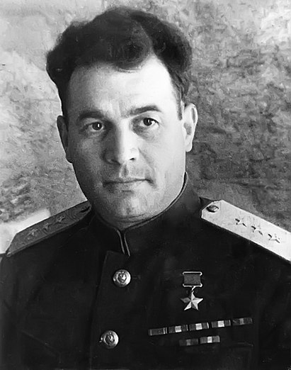

Черняховский Иван Даниилович

Черняховский Иван Даниилович (1907–1945). В Великую Отечественную войну командовал 28-й танковой дивизией в ходе Прибалтийской оборонительной операции. В первые месяцы войны ему присвоено воинское звание полковник.5 мая 1942 года Черняховскому И.Д. присвоено звание генерал-майора (в 35 лет). С 26 июля 1942 года — до апреля 1944 года — командующий 60-й армией (Воронежский, Центральный и 1-й Украинский фронты), которая приняла участие в Воронежско-Касторненской операции, Курской битве, форсировании рек Десна и Днепр, в Киевской, Житомирско-Бердичевской, Ровно-Луцкой, Проскуровско-Черновицкой операциях.За операцию по освобождению города Воронежа представлен к ордену Красного Знамени.В ходе зимнего наступления 1942/1943 годов армия генерала Черняховского в зимних условиях и без численного превосходства над противником прошла с боями на запад свыше 300 километров, уничтожив около 37 000 немецких и венгерских солдат и офицеров, ещё 16 800 солдат противника захватив в плен. Именно армия Черняховского сыграла решающую роль в стремительном освобождении Курска, нанеся неожиданный для противника глубокий фланговый удар.Указом Президиума Верховного Совета СССР от 17 октября 1943 года за проявленный личный героизм генерал-лейтенанту Черняховскому Ивану Даниловичу присвоено звание Героя Советского Союза.С 12 апреля 1944 года Черняховский командовал войсками 3-го Белорусского фронта. Второй медали «Золотая Звезда» генерал армии Черняховский Иван Данилович удостоен Указом Президиума Верховного Совета СССР от 29 июля 1944 года.18 февраля 1945 года генерал армии Черняховский И. Д. при инспектировании боеготовности находящихся в тылу частей Красной армии был тяжело ранен прилетевшим со стороны тыла осколком артиллерийского снаряда и в тот же день скончался. Был похоронен в освобождённом им Вильнюсе на одной из центральных площадей.
На главную